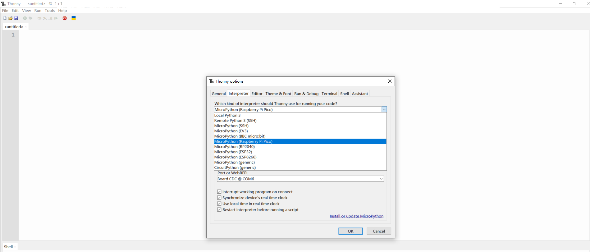
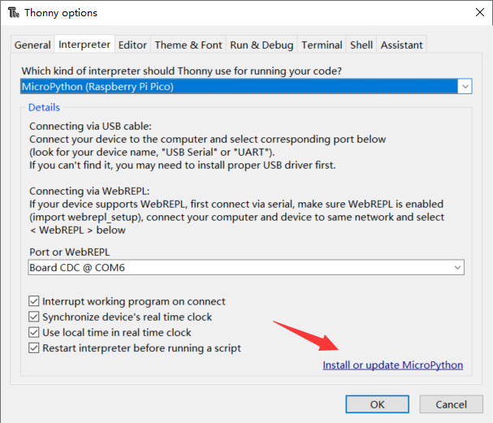
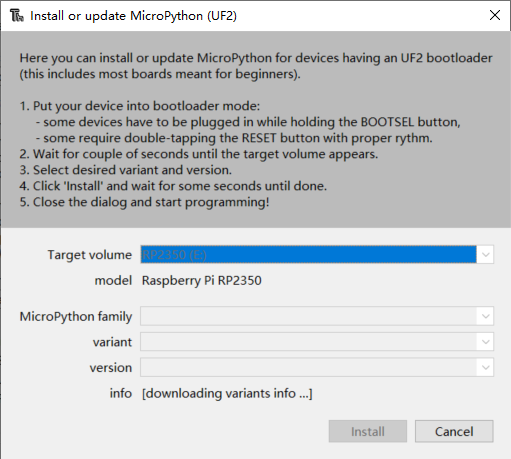
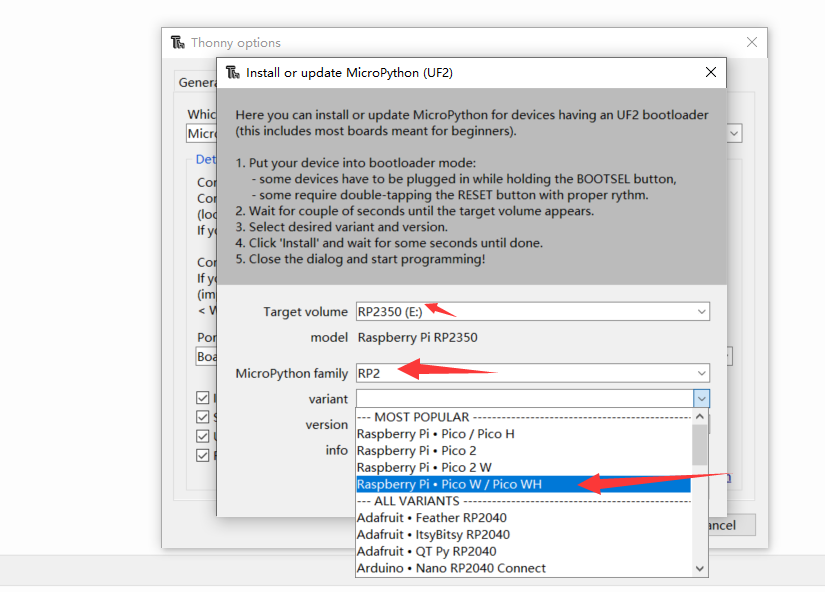
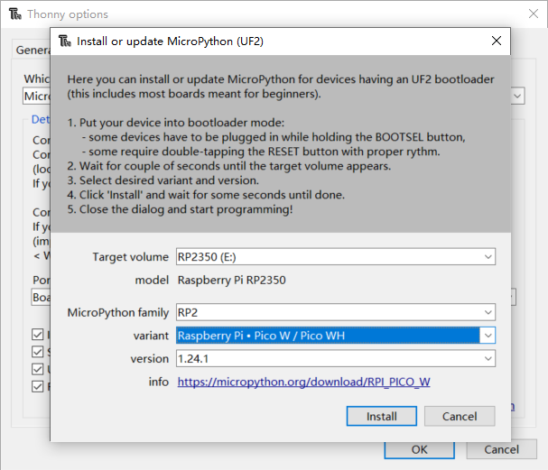
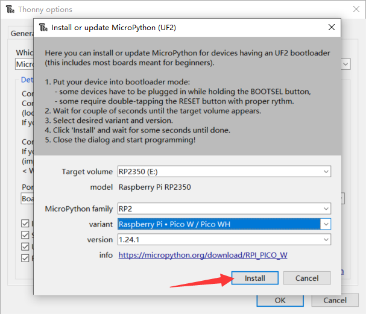

Raspberry Pi Pico 2 WH Starter Kit Introduction
- Product Name: Raspberry Pi Pico 2 WH Starter Kit
- Product SKU: KZ-0083
Welcome to the Raspberry Pi Pico 2 WH Starter Kit! This comprehensive kit is designed for beginners and enthusiasts who are eager to dive into the world of microcontroller programming and electronics. Whether you're a student, hobbyist, or educator, this kit provides everything you need to start experimenting with the Raspberry Pi Pico 2 WH.
Kit Contents
| Item | Description | Quantity |
|---|---|---|
| Raspberry Pi Pico 2 WH | A WiFi-enabled microcontroller board with headers soldered on | 1 |
| LED Indicator | Red, white, blue, and yellow LEDs (5 each) | 20 |
| 220ohm Resistor | Red, white, blue, and yellow resistors (5 each) | 20 |
| Push button | Tactile buttons with caps | 5 |
| Buzzer | Audible alert component | 2 |
| Long Breadboard | 800-hole breadboard for prototyping | 1 |
| Servo | Standard servo motor for mechanical control | 1 |
| MicroUSB Programming Cable | Cable for programming and power supply | 1 |
| Dupont Jump Wire (Male-to-Female) | For connecting components to the breadboard | 40 |
| Dupont Jump Wire (Male-to-Male) | For connecting components to the breadboard | 40 |
| Resistor Color Code Chart | Reference chart for resistor values | 1 |
| Plastic Box | Storage box for organizing components | 1 |
| Instruction Manual | Comprehensive guide to get you started | 1 |
Features
- Raspberry Pi Pico 2 WH: This board is equipped with WiFi capabilities and comes with headers soldered on, making it ready for immediate use.
- Diverse Components: The kit includes a wide range of sensors and components, allowing you to experiment with various projects, from simple LED control to more complex sensor-based applications.
- Prototyping Breadboard: The included 800-hole breadboard provides ample space for building and testing your circuits without the need for soldering.
- User-Friendly Documentation: The instruction manual offers step-by-step guidance to help you get started with your first projects and understand the basics of microcontroller programming.
Getting Started
To start using your Raspberry Pi Pico 2 WH Starter Kit, follow these steps:
- Unpack the Kit: Carefully unpack all the components and ensure everything is present.
- Read the Manual: Go through the instruction manual to familiarize yourself with the components and basic concepts.
- Set Up Your Environment: Connect the Raspberry Pi Pico 2 WH to your computer using the MicroUSB cable and set up the necessary software for programming.
- Start with Basic Projects: Begin with simple projects like blinking an LED or reading sensor data to get comfortable with the hardware and programming environment.
- Explore and Experiment: Once you're comfortable, start exploring more complex projects and combining different components to create your own unique applications.
Raspberry Pi Pico 2 WH Experiment Guide
This guide provides a series of experiments using the Raspberry Pi Pico 2 WH and various sensors included in the starter kit. Each experiment includes a practical application scenario, an explanation of the working principle, circuit wiring instructions, and a MicroPython demo code with detailed explanations.
Basic Steps
- Install Programming IDE
- Step 1: Download and Install Thonny IDE
- Step 2: Download the Latest MicroPython Firmware
- Step 3: Put Your Pico 2 WH into Bootloader Mode
- Step 4: Flash the MicroPython Firmware
- Step 6: Testing Your Setup
Basic Demo Projects
- Project 1 Blinking LED
- Project 2 Buttons
- Project 3 Music Box
- Project 4 Potentiometer
- Project 5 Fun with Servo and Friends
- Project 6 Stepper Motor
- Project 7 Network
- Project 8 LCD1602 Display Module
- Project 9 Comprehensive Experiment with Network Operation
Install Programming IDE
How to Install Thonny IDE and Flash MicroPython on Raspberry Pi Pico 2 WH?
This guide will walk you through the process of installing Thonny IDE on your computer and flashing MicroPython onto your Raspberry Pi Pico 2 WH. By the end of this guide, you'll be ready to start programming your Pico 2 WH using MicroPython.
Prerequisites
- A Raspberry Pi Pico 2 WH board.
- A Micro USB cable (for flashing and programming).
- A computer with internet access (Windows, macOS, or Linux).
Step 1: Download and Install Thonny IDE
Thonny is a beginner-friendly IDE (Integrated Development Environment) that supports MicroPython and is compatible with the Raspberry Pi Pico 2 WH.
For Windows:
- Go to the Thonny IDE download page.
- Download the latest Windows installer.
- Run the installer and follow the on-screen instructions to complete the installation.
For macOS:
- Go to the Thonny IDE download page.
- Download the macOS version.
- Open the downloaded
.pkgfile and follow the on-screen instructions to install Thonny.
For Linux:
- Open your terminal.
- Install Thonny using your distribution's package manager. For example:
- On Ubuntu/Debian:
sudo apt install thonny - On Fedora:
sudo dnf install thonny
Step 2: Download the Latest MicroPython Firmware
MicroPython needs to be flashed onto your Pico 2 WH before you can start programming it.
- Go to the MicroPython download page for Raspberry Pi Pico.
- Download the latest UF2 file (e.g.,
rp2-pico-20240224-v1.20.0.uf2).
Step 3: Put Your Pico 2 WH into Bootloader Mode
To flash the MicroPython firmware, you need to put your Pico 2 WH into bootloader mode.
- Connect your Pico 2 WH to your computer using the Micro USB cable.
- Press and hold the BOOTSEL button on the Pico 2 WH.
- While holding the button, power the board by connecting it to your computer.
- Release the BOOTSEL button once the board is powered.
Your Pico 2 WH should now appear as a USB drive (e.g., RPI-RP2).
Step 4: Flash the MicroPython Firmware
- Open the USB drive that appeared on your computer (e.g.,
RPI-RP2). - Drag and drop the downloaded UF2 file (
rp2-pico-20240224-v1.20.0.uf2) onto the USB drive. - The firmware flashing process will start automatically. You will see a new file named
INFO_UF2.TXTappear on the drive once flashing is complete.
Step 5: Configure Thonny IDE to Work with Pico 2 WH
- Open Thonny IDE on your computer.
- Go to Run > Select Interpreter.
- In the MicroPython (Raspberry Pi Pico) section, select your Pico 2 WH from the list of connected devices.
- Click OK to confirm.

NOTE: you can also install or update MicroPython firmware by clicking this:

- wait for a while:

-
Select target volume, Micropython family and variant according to your Pico type. for example, if your pico is pico W, select
Raspberry Pi * Pico W/Pico WHas following figure:
-
In this kit, the mainboard is Pico 2W, so just select
Raspberry Pi * Pico 2 W. and then clickinstall.


Step 6: Testing Your Setup
To ensure everything is working correctly, let's run a simple test program.
- In Thonny IDE, open a new script window.
- Enter the following code:
from machine import Pin
import time
led = Pin(25, Pin.OUT) # Use the onboard LED on GPIO 25
while True:
led.value(1) # Turn on the LED
time.sleep(1) # Wait for 1 second
led.value(0) # Turn off the LED
time.sleep(1) # Wait for 1 second
- Click the Run button (green triangle) to execute the script.
- The onboard LED on your Pico 2 WH should start blinking.
Troubleshooting Tips
- Firmware Not Showing Up: Ensure you are in bootloader mode and that the USB drive appears on your computer.
- Thonny Not Detecting Pico 2 WH: Restart Thonny IDE after flashing the firmware.
- Code Not Running: Double-check your code for typos and ensure the correct GPIO pins are used.
You have now successfully installed Thonny IDE, flashed MicroPython onto your Raspberry Pi Pico 2 WH, and run a simple test program. You are ready to start exploring more advanced projects and experimenting with MicroPython on your Pico 2 WH! Happy coding!